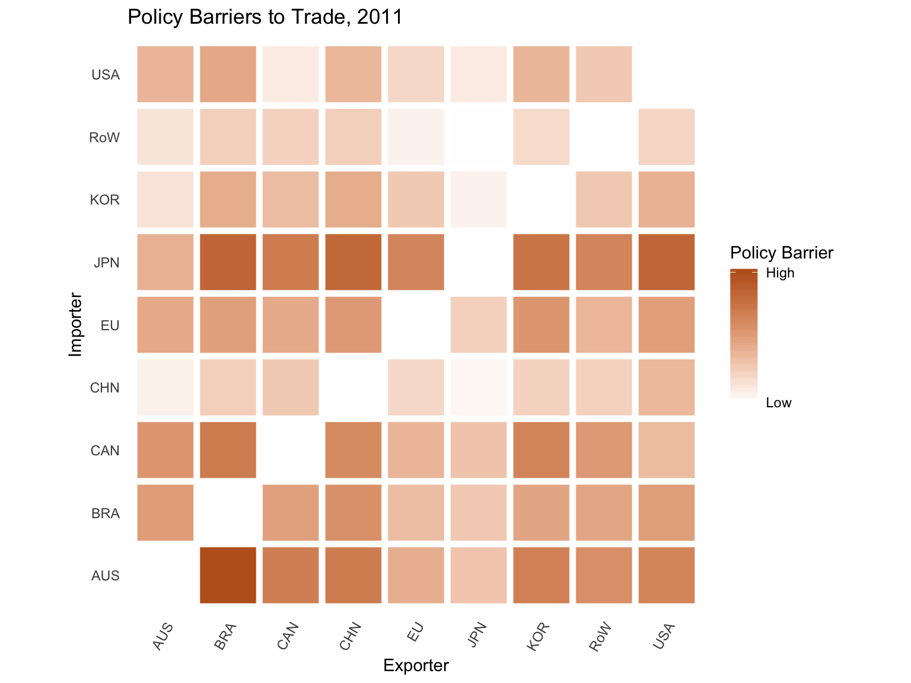
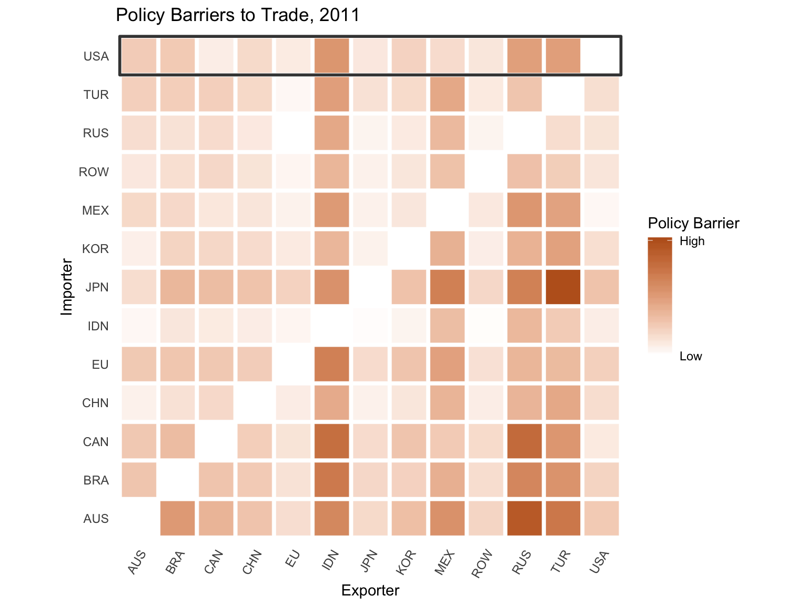
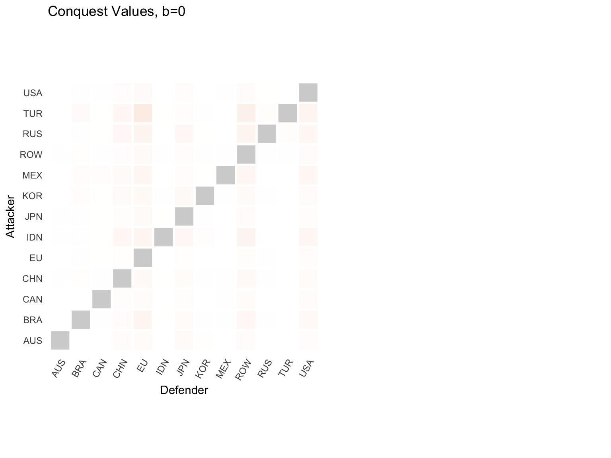
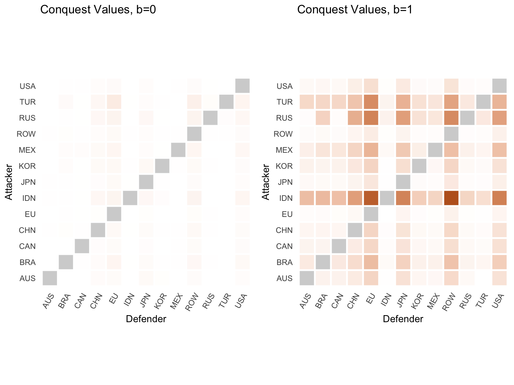
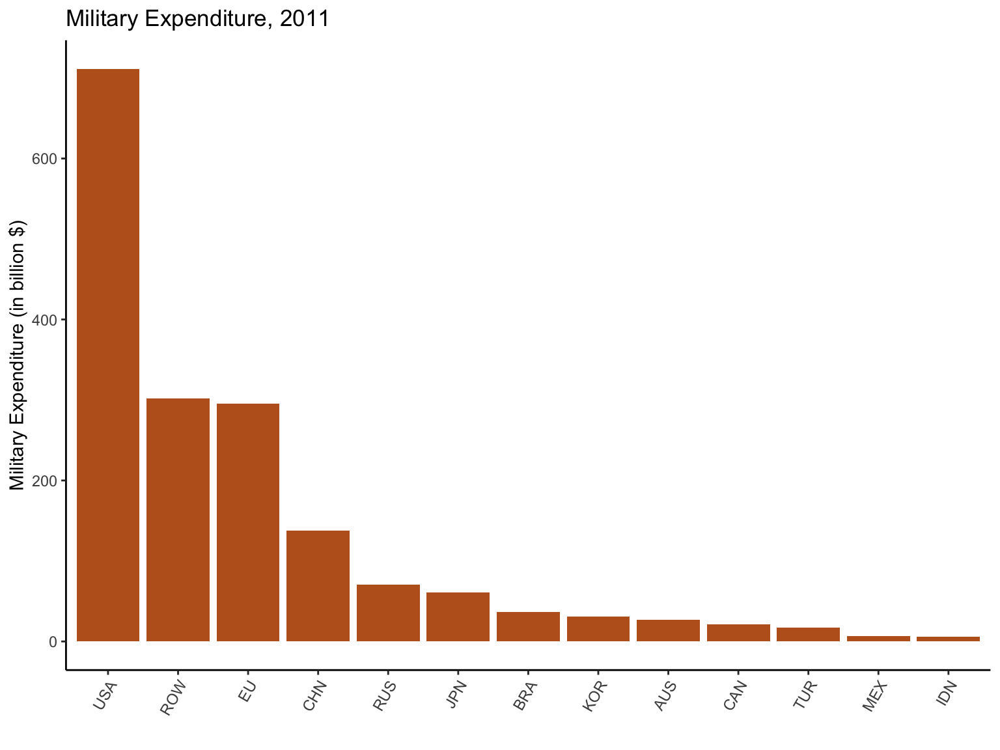
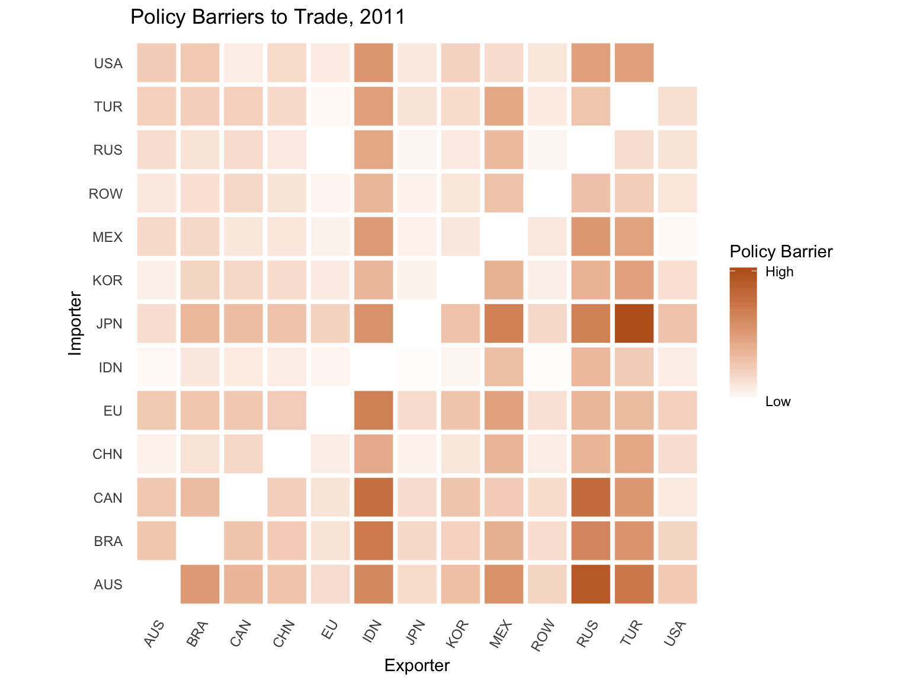
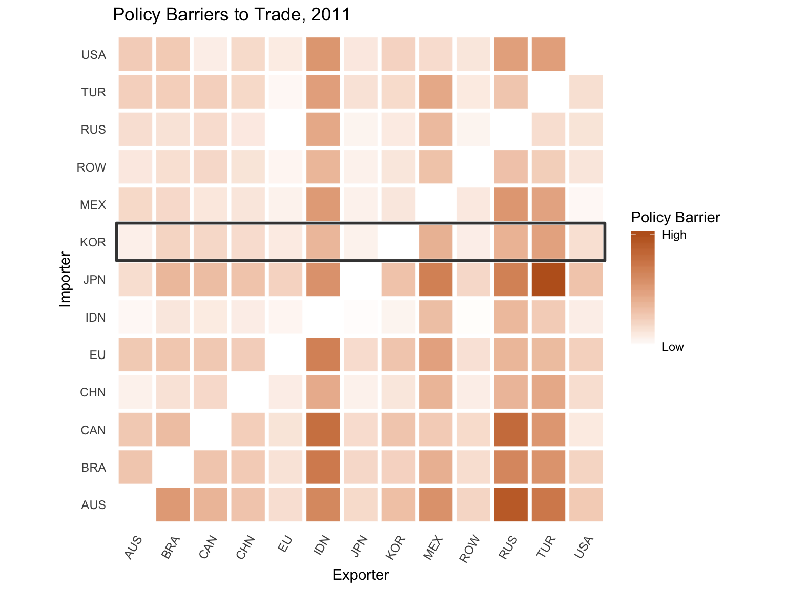
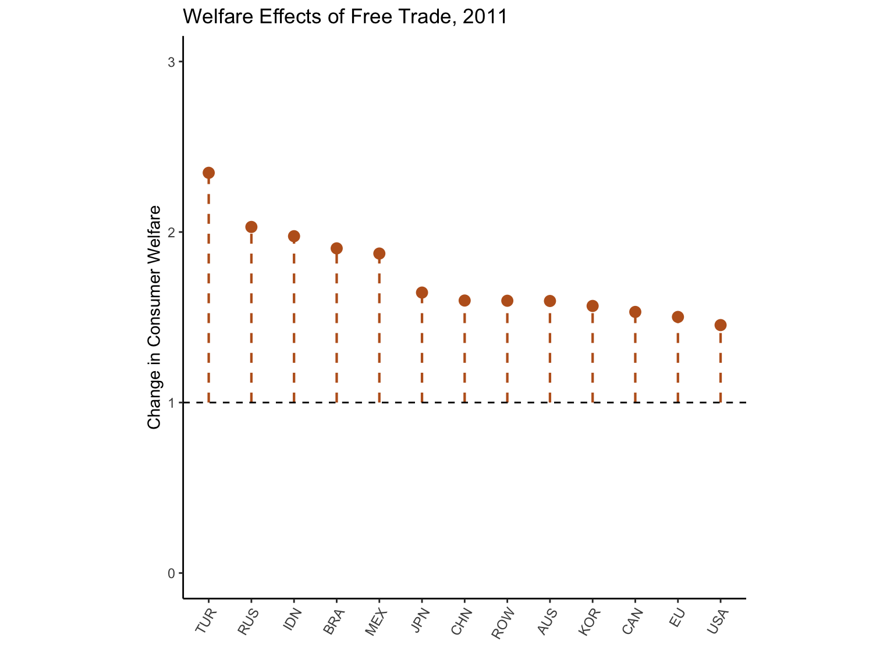

\[ \require{color} \definecolor{bcOrange}{RGB}{189,97,33} \newcommand\iddots{\mathinner{ \kern1mu\raise1pt{.} \kern2mu\raise4pt{.} \kern2mu\raise7pt{\Rule{0pt}{7pt}{0pt}.} \kern1mu }} \DeclareMathOperator*{\argmax}{arg\,max} \DeclareMathOperator*{\argmin}{arg\,min} \newcommand{\bm}[1]{\boldsymbol{\mathbf{#1}}} \]
Anarchy and Inference
Trade Policy: What Do Governments Want?
Trade Policy: Does It Matter?
Ideal Experiment
A Coercive International Political Economy
\[ \left\{ \bm{\theta}, \bm{M} \right\} \rightarrow \bm{\tau} \]
Estimation: \(\left\{ \bm{\tau}, \bm{M} \right\} \rightarrow \bm{\theta}\)
Counterfactuals: \(\left\{ \bm{\theta}^\prime, \bm{M}^\prime \right\} \rightarrow \bm{\tau}^\prime\)
\[ \left\{ \bm{\theta}, \bm{M} \right\} \rightarrow \bm{\tau} \]
Sequence
Payoffs
\[ G_i \left( h(\bm{\tau}), \bm{a} \right) \]
\[ \bm{\tau} = \begin{pmatrix} \tau_{11} & \cdots & \cdots & \cdots & \tau_{1N} \\ \vdots & \ddots & \vdots & \iddots & \vdots \\ \vdots & \cdots & \tau_{ij} & \cdots & \vdots \\ \vdots & \iddots & \vdots & \ddots & \vdots \\ \tau_{N1} & \cdots & \cdots & \cdots & \tau_{NN} \end{pmatrix} \]
\[ \bm{\tau} = \begin{pmatrix} \tau_{11} & \cdots & \cdots & \cdots & \tau_{1N} \\ \vdots & \ddots & \vdots & \iddots & \vdots \\ \vdots & \cdots & \color{bcOrange} \tau_{ij} & \cdots & \vdots \\ \vdots & \iddots & \vdots & \ddots & \vdots \\ \tau_{N1} & \cdots & \cdots & \cdots & \tau_{NN} \end{pmatrix} \]
\[ \bm{\tau} = \begin{pmatrix} \color{bcOrange} \tau_{11} & \color{bcOrange} \cdots & \color{bcOrange} \cdots & \color{bcOrange} \cdots & \color{bcOrange} \tau_{1N} \\ \vdots & \ddots & \vdots & \iddots & \vdots \\ \vdots & \cdots & \tau_{ij} & \cdots & \vdots \\ \vdots & \iddots & \vdots & \ddots & \vdots \\ \tau_{N1} & \cdots & \cdots & \cdots & \tau_{NN} \end{pmatrix} \]
\[ \color{bcOrange} \bm{\tau}_1 = \begin{pmatrix} \tau_{11} & \cdots & \cdots & \cdots & \tau_{1N} \end{pmatrix} \]


\[ \color{bcOrange} \bm{\tau} \color{black} = \begin{pmatrix} \tau_{11} & \cdots & \cdots & \cdots & \tau_{1N} \\ \vdots & \ddots & \vdots & \iddots & \vdots \\ \vdots & \cdots & \tau_{ij} & \cdots & \vdots \\ \vdots & \iddots & \vdots & \ddots & \vdots \\ \tau_{N1} & \cdots & \cdots & \cdots & \tau_{NN} \end{pmatrix} \]
\[ \color{bcOrange} h(\bm{\tau}) \rightarrow \begin{pmatrix} w_1 \\ \vdots \\ w_N \end{pmatrix} = \bm{w} \]
\[ h(\bm{\tau}) \rightarrow \begin{pmatrix} w_1 \\ \vdots \\ w_N \end{pmatrix} = \color{bcOrange} \bm{w} \]
\[ r_i(\color{bcOrange} \bm{w} \color{black}) = \sum_j (\tau_{ij} - 1) X_{ij}(\color{bcOrange} \bm{w} \color{black}) \]
Government Objective
\[ G_i = V_i( \color{bcOrange} \bm{w} \color{black})^{1 - b_i} r_i(\color{bcOrange} \bm{w} \color{black})^{b_i} \]
\[ h(\bm{\tau}) \rightarrow \begin{pmatrix} w_1 \\ \vdots \\ w_N \end{pmatrix} = \bm{w} \]
\[ r_i(\bm{w} \color{black}) = \sum_j (\tau_{ij} - 1) X_{ij}(\bm{w}) \]
Government Objective
\[ G_i = V_i(\bm{w})^{ \color{bcOrange} 1 - b_i \color{black} } r_i(\bm{w})^{\color{bcOrange} b_i \color{black} } \]
Optimal Post-Conquest Policies
\[ \bm{\tau}_j^{i \star} = \argmax_{\bm{\tau}_j} \quad G_i(\bm{\tau}_j ; \tilde{\bm{\tau}}_{-j}) \]
Optimal Post-Conquest Policies
\[ \color{bcOrange} \bm{\tau}_j^{i \star} \color{black} = \argmax_{\bm{\tau}_j} \quad G_{\color{bcOrange} i} \color{black} (\bm{\tau}_{\color{bcOrange} j} \color{black} ; \tilde{\bm{\tau}}_{-j}) \]
Optimal Post-Conquest Policies
\[ \color{bcOrange} \bm{\tau}_j^{i \star} \color{black} = \argmax_{\bm{\tau}_j} \quad G_{i}(\bm{\tau}_{j}; \tilde{\bm{\tau}}_{-j}) \]
Conquest Values
\[ G_i(\color{bcOrange} \bm{\tau}_j^{i \star} \color{black} ; \tilde{\bm{\tau}}_{-j}) \]
Conquest Values
\[ G_j(\bm{\tau}_i^{j \star} \color{black} ; \tilde{\bm{\tau}}_{-i}) \]

Conquest Values
\[ G_j(\bm{\tau}_i^{j \star} \color{black} ; \tilde{\bm{\tau}}_{-i}) \]

Conquest Values
\[ G_j(\bm{\tau}_i^{j \star} \color{black} ; \tilde{\bm{\tau}}_{-i}) \]
Contest Function (Dyadic) (Multilateral Version)
\[ \chi_{ji}(\bm{m}) = \frac{ \rho_{ji}(\bm{W}; \bm{\alpha}) m_{ji} }{ \rho_{ji}(\bm{W}; \bm{\alpha}) m_{ji} + m_{ii} } \]
Conquest Values
\[ G_j(\bm{\tau}_i^{j \star} \color{black} ; \tilde{\bm{\tau}}_{-i}) \]
Contest Function (Dyadic)
\[ \color{bcOrange} \chi_{ji}(\bm{m}) \color{black} = \frac{ \rho_{ji}(\bm{W}; \bm{\alpha}) m_{ji} }{ \rho_{ji}(\bm{W}; \bm{\alpha}) m_{ji} + m_{ii} } \]
Conquest Values
\[ G_j(\bm{\tau}_i^{j \star} \color{black} ; \tilde{\bm{\tau}}_{-i}) \]
Contest Function (Dyadic)
\[ \chi_{ji}( \color{bcOrange} \bm{m} \color{black}) = \frac{ \rho_{ji}(\bm{W}; \bm{\alpha}) \color{bcOrange} m_{ji} \color{black} }{ \rho_{ji}(\bm{W}; \bm{\alpha}) \color{bcOrange} m_{ji} \color{black} + \color{bcOrange} m_{ii} \color{black} } \]
Conquest Values
\[ G_j(\bm{\tau}_i^{j \star} \color{black} ; \tilde{\bm{\tau}}_{-i}) \]
Contest Function (Dyadic)
\[ \chi_{ji}(\bm{m}) = \frac{ \color{bcOrange} \rho_{ji} \color{black} (\bm{W}; \bm{\alpha}) m_{ji} }{ \color{bcOrange} \rho_{ji} \color{black} (\bm{W}; \bm{\alpha}) m_{ji} + m_{ii} } \]
Conquest Values
\[ G_j(\bm{\tau}_i^{j \star} \color{black} ; \tilde{\bm{\tau}}_{-i}) \]
Contest Function (Dyadic)
\[ \chi_{ji}(\bm{m}) = \frac{ \rho_{ji} (\color{bcOrange} \bm{W} \color{black} ; \bm{\alpha}) m_{ji} }{ \rho_{ji} ( \color{bcOrange} \bm{W} \color{black} ; \bm{\alpha}) m_{ji} + m_{ii} } \]
Conquest Values
\[ G_j(\bm{\tau}_i^{j \star} \color{black} ; \tilde{\bm{\tau}}_{-j}) \]
Contest Function (Dyadic)
\[ \chi_{ji}(\bm{m}) = \frac{ \rho_{ji} (\bm{W}; \color{bcOrange} \bm{\alpha} \color{black}) m_{ji} }{ \rho_{ji} ( \bm{W}; \color{bcOrange} \bm{\alpha} \color{black}) m_{ji} + m_{ii} } \]
Conquest Values
\[ G_j(\bm{\tau}_i^{j \star} \color{black} ; \tilde{\bm{\tau}}_{-j}) \]
Contest Function (Dyadic)
\[ \color{bcOrange} \chi_{ji} (\bm{m}) \color{black} = \frac{ \rho_{ji} (\bm{W}; \bm{\alpha}) m_{ji} }{ \rho_{ji} (\bm{W}; \bm{\alpha}) m_{ji} + m_{ii} } \]
Reservation Values
\[ \color{bcOrange} \chi_{ji} (\bm{m}) \color{black} G_j(\bm{\tau}_i^{j \star}; \tilde{\bm{\tau}}_{-j}) + \color{bcOrange} \left( 1 - \chi_{ji} (\bm{m}) \right) \color{black} G_j(\tilde{\bm{\tau}}) - c_j \]
Conquest Values
\[ G_j(\bm{\tau}_i^{j \star} \color{black} ; \tilde{\bm{\tau}}_{-i}) \]
Contest Function (Dyadic)
\[ \chi_{ji} (\bm{m}) = \frac{ \rho_{ji} (\bm{W}; \bm{\alpha}) m_{ji} }{ \rho_{ji} (\bm{W}; \bm{\alpha}) m_{ji} + m_{ii} } \]
Reservation Values
\[ \chi_{ji} (\bm{m}) G_j(\bm{\tau}_i^{j \star}; \tilde{\bm{\tau}}_{-j}) + \left( 1 - \chi_{ji} (\bm{m}) \right) G_j(\tilde{\bm{\tau}}) - \color{bcOrange} c_j \]
Conquest Values
\[ G_j(\bm{\tau}_i^{j \star} \color{black} ; \tilde{\bm{\tau}}_{-i}) \]
Contest Function (Dyadic)
\[ \chi_{ji} (\bm{m}) = \frac{ \rho_{ji} (\bm{W}; \bm{\alpha}) m_{ji} }{ \rho_{ji} (\bm{W}; \bm{\alpha}) m_{ji} + m_{ii} } \]
Reservation Values
\[ \color{bcOrange} \underline{G}_{ji}(\bm{m}) \color{black} = \chi_{ji} (\bm{m})G_j(\bm{\tau}_i^{j \star}; \tilde{\bm{\tau}}_{-j}) + \left( 1 - \chi_{ji} (\bm{m}) \right) G_j(\tilde{\bm{\tau}}) - c_j \]
\[ \color{bcOrange} \underline{G}_{ji}(\bm{m}) \color{black} = \chi_{ji} (\bm{m}) G_j(\bm{\tau}_i^{j \star}; \tilde{\bm{\tau}}_{-j}) + \left( 1 - \chi_{ji} (\bm{m}) \right) G_j(\tilde{\bm{\tau}}) - c_j \]
Constrained Optimal Policies
\[\begin{equation} \begin{split} \max_{ \tilde{\bm{\tau}}_i } & \quad G_i(\tilde{\bm{\tau}}_i; \tilde{\bm{\tau}}_{-i}) \end{split} \end{equation}\]\[ \color{bcOrange} \underline{G}_{ji}(\bm{m}) \color{black} = \chi_{ji} (\bm{m}) G_j(\bm{\tau}_i^{j \star}; \tilde{\bm{\tau}}_{-j}) + \left( 1 - \chi_{ji} (\bm{m}) \right) G_j(\tilde{\bm{\tau}}) - c_j \]
Constrained Optimal Policies
\[\begin{equation} \begin{split} \max_{ \tilde{\bm{\tau}}_i } & \quad G_i(\tilde{\bm{\tau}}_i; \tilde{\bm{\tau}}_{-i}) \\ \text{subject to} & \quad G_j(\tilde{\bm{\tau}}_i; \tilde{\bm{\tau}}_{-i}) \geq \color{bcOrange} \underline{G}_{ji}(\bm{m}) \color{black} \text{ for all } j \neq i \end{split} \end{equation}\]\[ \underline{G}_{ji}(\color{bcOrange} \bm{m} \color{black}) = \chi_{ji} (\color{bcOrange} \bm{m} \color{black}) G_j(\bm{\tau}_i^{j \star}; \tilde{\bm{\tau}}_{-j}) + \left( 1 - \chi_{ji} (\color{bcOrange} \bm{m} \color{black}) \right) G_j(\tilde{\bm{\tau}}) - c_j \]
Constrained Optimal Policies
\[\begin{equation} \begin{split} \max_{ \tilde{\bm{\tau}}_i } & \quad G_i(\tilde{\bm{\tau}}_i; \tilde{\bm{\tau}}_{-i}) \\ \text{subject to} & \quad G_j(\tilde{\bm{\tau}}_i; \tilde{\bm{\tau}}_{-i}) \geq \underline{G}_{ji}( \color{bcOrange} \bm{m} \color{black}) \text{ for all } j \neq i \end{split} \end{equation}\]\[ \underline{G}_{ji}(\color{bcOrange} \bm{m} \color{black}) = \chi_{ji} (\color{bcOrange} \bm{m} \color{black}) G_j(\bm{\tau}_i^{j \star}; \tilde{\bm{\tau}}_{-j}) + \left( 1 - \chi_{ji} (\color{bcOrange} \bm{m} \color{black}) \right) G_j(\tilde{\bm{\tau}}) - c_j \]
Constrained Optimal Policies
\[\begin{equation} \begin{split} \tilde{\bm{\tau}}_i^\star( \color{bcOrange} \bm{m} \color{black}) = \argmax_{ \tilde{\bm{\tau}}_i } & \quad G_i(\tilde{\bm{\tau}}_i; \tilde{\bm{\tau}}_{-i}) \\ \text{subject to} & \quad G_j(\tilde{\bm{\tau}}_i; \tilde{\bm{\tau}}_{-i}) \geq \underline{G}_{ji}( \color{bcOrange} \bm{m} \color{black}) \text{ for all } j \neq i \end{split} \end{equation}\]\[ \underline{G}_{ji}(\color{bcOrange} \bm{m} \color{black}) = \chi_{ji} (\color{bcOrange} \bm{m} \color{black}) G_j(\bm{\tau}_i^{j \star}; \tilde{\bm{\tau}}_{-j}) + \left( 1 - \chi_{ji} (\color{bcOrange} \bm{m} \color{black}) \right) G_j(\tilde{\bm{\tau}}) - c_j \]
Constrained Optimal Policies
\[\begin{equation} \begin{split} \tilde{\bm{\tau}}_i^\star( \color{bcOrange} \bm{m} \color{black}) = \argmax_{ \tilde{\bm{\tau}}_i } & \quad G_i(\tilde{\bm{\tau}}_i; \tilde{\bm{\tau}}_{-i}) \\ \text{subject to} & \quad G_j(\tilde{\bm{\tau}}_i; \tilde{\bm{\tau}}_{-i}) \geq \underline{G}_{ji}( \color{bcOrange} \bm{m} \color{black}) \text{ for all } j \neq i \end{split} \end{equation}\]Optimal Military Strategies
\[\begin{equation} \begin{split} \max_{ \color{bcOrange} \bm{m}_i \color{black} } & \quad G_i \left(\tilde{\bm{\tau}}^\star( \color{bcOrange} \bm{m}_i \color{black} ; \bm{m}_{-i}) \right) \end{split} \end{equation}\]\[ \color{bcOrange} \bm{m}_i = \begin{pmatrix} m_{i1} & \cdots & m_{iN} \end{pmatrix} \]
\[ \underline{G}_{ji}(\bm{m}) = \chi_{ji} (\bm{m}) G_j(\bm{\tau}_i^{j \star}; \tilde{\bm{\tau}}_{-j}) + \left( 1 - \chi_{ji} (\bm{m}) \right) G_j(\tilde{\bm{\tau}}) - c_j \]
Constrained Optimal Policies
\[\begin{equation} \begin{split} \tilde{\bm{\tau}}_i^\star(\bm{m}) = \argmax_{ \tilde{\bm{\tau}}_i } & \quad G_i(\tilde{\bm{\tau}}_i; \tilde{\bm{\tau}}_{-i}) \\ \text{subject to} & \quad G_j(\tilde{\bm{\tau}}_i; \tilde{\bm{\tau}}_{-i}) \geq \underline{G}_{ji}(\bm{m}) \text{ for all } j \neq i \end{split} \end{equation}\]Optimal Military Strategies
\[\begin{equation} \begin{split} \max_{ \bm{m}_i } & \quad G_i \left(\tilde{\bm{\tau}}^\star( \bm{m}_i ; \bm{m}_{-i}) \right) \\ \text{subject to} & \quad \sum_j m_{ij} \leq \color{bcOrange} M_i \end{split} \end{equation}\]\[ \underline{G}_{ji}(\bm{m}) = \chi_{ji} (\bm{m}) G_j(\bm{\tau}_i^{j \star}; \tilde{\bm{\tau}}_{-j}) + \left( 1 - \chi_{ji} (\bm{m}) \right) G_j(\tilde{\bm{\tau}}) - c_j \]
Constrained Optimal Policies
\[\begin{equation} \begin{split} \tilde{\bm{\tau}}_i^\star(\bm{m}) = \argmax_{ \tilde{\bm{\tau}}_i } & \quad G_i(\tilde{\bm{\tau}}_i; \tilde{\bm{\tau}}_{-i}) \\ \text{subject to} & \quad G_j(\tilde{\bm{\tau}}_i; \tilde{\bm{\tau}}_{-i}) \geq \underline{G}_{ji}(\bm{m}) \text{ for all } j \neq i \end{split} \end{equation}\]Optimal Military Strategies
\[\begin{equation} \begin{split} \color{bcOrange} \bm{m}_i^\star \color{black} = \argmax_{ \bm{m}_i } & \quad G_i \left(\tilde{\bm{\tau}}^\star( \bm{m}_i ; \bm{m}_{-i}) \right) \\ \text{subject to} & \quad \sum_j m_{ij} \leq M_i \end{split} \end{equation}\]\[ \left\{ \bm{\tau}, \bm{M} \right\} \rightarrow \bm{\theta} \]
Data
Data

Data
Structural Parameters \[ \bm{\theta} = \left\{ \bm{b}, \rho(\bm{W}) \right\} \]
Data
Structural Parameters \[ \bm{\theta} = \left\{ \color{bcOrange} \bm{b} \color{black}, \rho(\bm{W}) \right\} \]
Data
Structural Parameters \[ \bm{\theta} = \left\{ \bm{b}, \color{bcOrange} \rho(\bm{W}) \color{black} \right\} \]
Data
Structural Parameters \[ \bm{\theta} = \left\{ \bm{b}, \rho(\bm{W}) \right\} \]
Measurement Error \[ \tau_{ij} = \tilde{\tau}_{ij}^\star(\bm{m}^\star; \bm{\theta}) - \epsilon_{ij} \]
Estimation Problem
\[\begin{equation} \begin{split} \hat{\bm{\theta}} = \argmin_{\bm{\theta}} & \quad \sum_i \sum_j \left( \epsilon_{ij}(\bm{\theta}) \right)^2 \end{split} \end{equation}\]

Consumer’s Problem
\[\begin{equation*} \label{eq:consumer} \begin{split} \max & \quad U_i = Q_i^{\nu_i} S_i^{1 - \nu_i} \\ \text{subject to} & \quad P_i Q_i + P_i^s S_i \leq w_i L_i \end{split} \end{equation*}\]CES Preferences over Tradable Varieties
\[ Q_i = \left( \int_{[0,1]} \alpha_{h(\omega)}^{\frac{1}{\sigma}} q_i(\omega)^{\frac{\sigma - 1}{\sigma}} d \omega \right)^{\frac{\sigma}{\sigma - 1}} \]
Tradable Price Index
\[ P_i = \left( \int_{[0,1]} \alpha_{h(\omega)} p_i(\omega)^{1 - \sigma} d \omega \right)^{\frac{1}{1 - \sigma}} \]
Expenditure on Tradables
\[ E_i^q = \nu_i I_i + D_i = P_i Q_i^\star \]
Costs
\[\begin{equation} \label{eq:c} c_i = w_i^{1 - \beta} P_i^{\beta} \end{equation}\]\[ E_i^x = \beta X_i \]
Local Prices
\[ p_{ii}(\omega) = \frac{c_i}{z_i(\omega)} \]
Technology (Frechet)
\[ F_i(z) = \text{Pr} \left\{ z_i(\omega) \leq z \right\} = \exp \left\{ - T_i z^{-\theta} \right\} \]
Total Expenditure on Tradables
\[ X_i = \underbrace{E_i^q + E_i^x}_{E_i} - D_i \]
Trade Shares
\[ \Omega_{ij}^\star = \left\{ \omega \in [0,1] \left. \right\vert p_{ij}(\omega) \leq \min_{k \neq j} \left\{ p_{ik} \right\} \right\} \]
\[ \lambda_{ij}(\boldsymbol{w}) = \frac{1}{E_i} \int_{\Omega_{ij}^\star} p_{ij}(\omega) q_i \left( p_{ij} (\omega) \right) d \omega \]
Market Clearing
\[ X_i = \sum_{j=1}^N \lambda_{ji}(\boldsymbol{w}) E_j \]
\[ \hat{r}_i = \frac{1}{r_i} \left( E_i \hat{E}_i(\hat{\bm{w}}) - \sum_j X_{ij}^{\text{cif}} \hat{X}_{ij}^{\text{cif}}(\hat{\bm{w}}) \right) \] \[ \hat{w}_i = \frac{1}{\nu_i w_i L_i} \left( \sum_j \left( (1 - \beta) X_{ji}^{\text{cif}} \hat{X}_{ji}^{\text{cif}}(\hat{\bm{w}}) \right) + (1 - \nu_i) r_i \hat{r}_i(\hat{\bm{w}}) \right) \] \[ \hat{E}_i(\hat{\bm{w}}) = \frac{1}{E_i} \left( E_i^q \hat{E}_i^q(\hat{\bm{w}}) + E_i^x \hat{E}_i^x(\hat{\bm{w}}) \right) \] \[ \hat{x}_{ij}(\hat{\bm{w}}) = \left( \hat{\tau}_{ij} \hat{w}_j^{1 - \beta} \hat{P}_j(\hat{\bm{w}})^\beta \right)^{-\theta} \hat{P}_i(\hat{\bm{w}})^{\theta} \] \[ \hat{P}_i(\hat{\bm{w}}) = \left( \sum_j x_{ij} \left( \hat{\tau}_{ij} \hat{w}_j^{1 - \beta} \hat{P}_j(\hat{\bm{w}})^\beta \right)^{-\theta} \right)^{-\frac{1}{\theta}} \] \[ 1 = \sum_i y_i \hat{w}_i \]
Government Welfare
\[ \hat{G}_i(\hat{\bm{\tau}}; b_i) = \hat{V}_i \left( \hat{h}(\hat{\bm{\tau}}) \right)^{1 - b_i} \hat{r}_i \left(\hat{h}(\hat{\bm{\tau}}) \right)^{b_i} \]
Optimal Post-Conquest Policies
\[\begin{equation*} \begin{split} \max_{\hat{\bm{\tau}}_j} & \quad \hat{G}_i(\hat{\bm{\tau}}_j; \hat{\tilde{\bm{\tau}}}_{-j}) \\ \text{subject to} & \quad \hat{\tau}_{jj} = 1 \end{split} \end{equation*}\]Constrained Policy Problem in Changes
\[\begin{equation*} \begin{split} \max_{ \hat{\tilde{\bm{\tau}}}_i } & \quad \hat{G}_i(\hat{\tilde{\bm{\tau}}}_i; \hat{\tilde{\bm{\tau}}}_{-i}) \\ \text{subject to} & \quad \hat{G}_j(\hat{\tilde{\bm{\tau}}}) - \hat{G}_j(\hat{\bm{\tau}}_i^{j \star}) + \hat{c} \left( \chi_{ji}(1; \bm{0}_{-j, -i}, \bm{m}) \right)^{-1} \geq 0 \quad \text{for all } j \neq i \end{split} \end{equation*}\]\[ \chi_{ij}(\bm{a}, \bm{m}) = \frac{ a_{ij} \rho_{ij}(\bm{W}; \bm{\alpha}) m_{ij} }{ \sum_k a_{kj} \rho_{kj}(\bm{W}; \bm{\alpha}) m_{kj} } \]
| iso3 | Country Name |
|---|---|
| AUS | Australia |
| BRA | Brazil |
| CAN | Canada |
| CHN | China |
| EU | European Union |
| IDN | Indonesia |
| JPN | Japan |
| KOR | Republic of Korea |
| MEX | Mexico |
| ROW | Rest of World |
| RUS | Russian Federation |
| TUR | Turkey |
| USA | United States of America |

Equilibrium Constraints
\[\begin{align*} \nabla_{\hat{\bm{x}}_i} \mathcal{L}_i^{\hat{\bm{x}}}(\hat{\bm{x}}_i; \bm{m}, \bm{\lambda}_i^{\bm{\chi}}, \bm{\lambda}_i^{\hat{\bm{w}}}, \bm{\theta}_m) &= \bm{0} \quad \text{for all } i \\ \lambda_{ij}^{\bm{\chi}} \left( \hat{G}_j(\hat{\bm{w}}; \bm{\theta}_m) - \hat{G}_j \left( \hat{\bm{\tau}}_i^{j \star}(\bm{\theta}_m) \right) + \hat{c} \left( \chi_{ji}(\bm{m}, \bm{\theta}_m) \right)^{-1} \right) &= 0 \quad \text{for all } i, j \\ \hat{\bm{w}} - \hat{h}(\hat{\tilde{\bm{\tau}}}) &= \bm{0} \\ \nabla_{\bm{m}} \mathcal{L}_i^{\bm{m}}(\bm{m}; \bm{\lambda}^{\bm{m}}, \bm{\theta}_m) &= \bm{0} \quad \text{for all } i \\ \lambda_i^{\bm{m}} \left( M_i - \sum_k m_{jk} \right) &= 0 \quad \text{for all } i \end{align*}\]Estimation Problem
\[\begin{equation*} \begin{split} \min_{\bm{\theta}_m, \bm{m}, \bm{\lambda}^{\bm{\chi}}, \bm{\lambda}^{\bm{w}}, \bm{\lambda}^{\bm{m}}} & \quad \sum_i \sum_j \epsilon_{ij}(\bm{\theta}_m)^2 \\ \text{subject to} & \quad g(\bm{1}, \bm{\theta}_m, \bm{m}, \bm{\lambda}^{\bm{\chi}}, \bm{\lambda}^{\bm{w}}, \bm{\lambda}^{\bm{m}}) = \bm{0} \end{split} \end{equation*}\]Art, Robert J. 1996. “American foreign policy and the fungibility of force.” Security Studies 5 (4):7–42.
Autor, David H, David Dorn, and Gordon H Hanson. 2013. “The China syndrome: Local labor market effects of import competition in the United States.” The American Economic Review 103 (6):2121–68.
Brito, Dagobert L., and Michael D. Intrilagator. 1985. “Conflict, War, and Redistribution.” American Political Science Review 79 (4).
Cooley, Brendan. 2019. “Estimating Policy Barriers to Trade.”
Costinot, Arnaud, and Andrés Rodríguez-Clare. 2015. “Trade Theory with Numbers: Quantifying the Consequences of Globalization.” Handbook of International Economics 4:197–261.
Fearon, James D. 1995. “Rationalist explanations for war.” International Organization 49 (03):379–414.
Findlay, Ronald., and Kevin H. O’Rourke. 2007. Power and plenty : trade, war, and the world economy in the second millennium. Princeton University Press.
Gawande, Kishore, Pravin Krishna, and Marcelo Olarreaga. 2009. “What governments maximize and why: the view from trade.” International Organization 63 (03):491–532.
Goldberg, P K, and N Pavcnik. 2016. “The Effects of Trade Policy.” Handbook of Commercial Policy 1:161–206.
Grossman, Gene M, and Elhanan Helpman. 1994. “Protection for Sale.” The American Economic Review, 833–50.
Su, Che Lin, and Kenneth L. Judd. 2012. “Constrained Optimization Approaches to Estimation of Structural Models.” Econometrica 80 (5):2213–30.